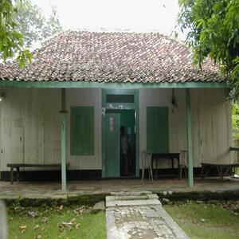
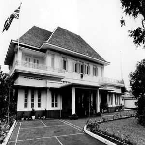
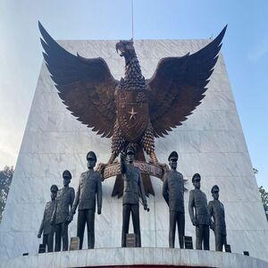
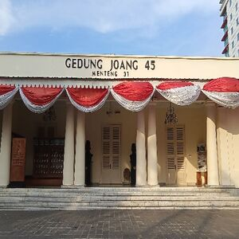
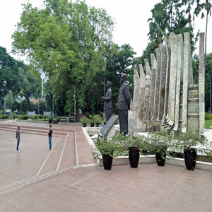
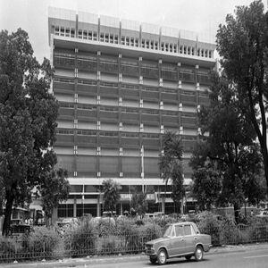

Tempat Bersejarah
Berikut merupakan beberapa tempat yang menjadi saksi dari perjuangan para pahlawan negara yang ingin memberikan kemerdekaan pada rakyatnya.

Rumah Rengasdengklok
Karawang
Monumen Kebulatan Tekad
Karawang

Museum Perumusan Naskah
Jakarta
Museum Kebangkitan
Jakarta

Monumen Pancasila Sakti
Jakarta

Gedung Joang 45
Jakarta

Tugu Proklamasi
Jakarta

Monumen Nasional
Jakarta

Radio Republik Indonesia
Jakarta